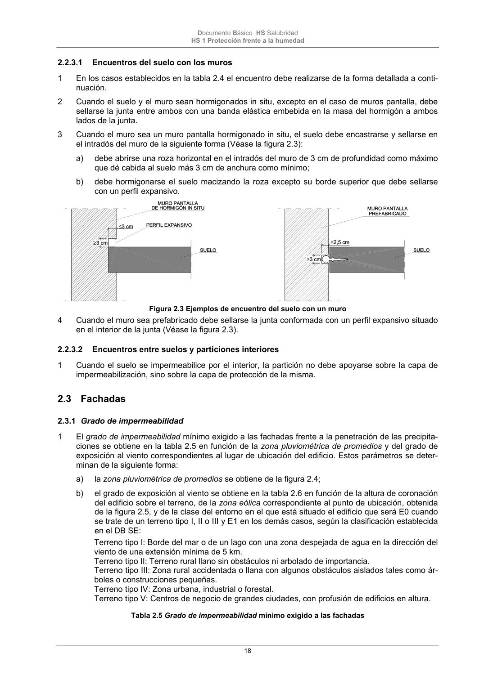

DB-HS · Página 18 · versión 2022-06-14
SHA256: 68df3caacc95f71aee2ec1ba7b2c65ae66155c21e3a8785521b8fdd4fd640d3b · página física 18 de 184 · métodos de encabezado
solo si están cotejados.
Formatos: Markdown · JSON de bloques · PDF p. 18 · imagen PNG
Documento Básico HS Salubridad HS 1 Protección frente a la humedad 18 2.2.3.1 Encuentros del suelo con los muros 1 En los casos establecidos en la tabla 2.4 el encuentro debe realizarse de la forma detallada a conti- nuación. 2 Cuando el suelo y el muro sean hormigonados in situ, excepto en el caso de muros pantalla, debe sellarse la junta entre ambos con una banda elástica embebida en la masa del hormigón a ambos lados de la junta. 3 Cuando el muro sea un muro pantalla hormigonado in situ, el suelo debe encastrarse y sellarse en el intradós del muro de la siguiente forma (Véase la figura 2.3): a) debe abrirse una roza horizontal en el intradós del muro de 3 cm de profundidad como máximo que dé cabida al suelo más 3 cm de anchura como mínimo; b) debe hormigonarse el suelo macizando la roza excepto su borde superior que debe sellarse con un perfil expansivo. Figura 2.3 Ejemplos de encuentro del suelo con un muro 4 Cuando el muro sea prefabricado debe sellarse la junta conformada con un perfil expansivo situado en el interior de la junta (Véase la figura 2.3). 2.2.3.2 Encuentros entre suelos y particiones interiores 1 Cuando el suelo se impermeabilice por el interior, la partición no debe apoyarse sobre la capa de impermeabilización, sino sobre la capa de protección de la misma. 2.3 Fachadas 2.3.1 Grado de impermeabilidad 1 El grado de impermeabilidad mínimo exigido a las fachadas frente a la penetración de las precipita- ciones se obtiene en la tabla 2.5 en función de la zona pluviométrica de promedios y del grado de exposición al viento correspondientes al lugar de ubicación del edificio. Estos parámetros se deter- minan de la siguiente forma: a) la zona pluviométrica de promedios se obtiene de la figura 2.4; b) el grado de exposición al viento se obtiene en la tabla 2.6 en función de la altura de coronación del edificio sobre el terreno, de la zona eólica correspondiente al punto de ubicación, obtenida de la figura 2.5, y de la clase del entorno en el que está situado el edificio que será E0 cuando se trate de un terreno tipo I, II o III y E1 en los demás casos, según la clasificación establecida en el DB SE: Terreno tipo I: Borde del mar o de un lago con una zona despejada de agua en la dirección del viento de una extensión mínima de 5 km. Terreno tipo II: Terreno rural llano sin obstáculos ni arbolado de importancia. Terreno tipo III: Zona rural accidentada o llana con algunos obstáculos aislados tales como ár- boles o construcciones pequeñas. Terreno tipo IV: Zona urbana, industrial o forestal. Terreno tipo V: Centros de negocio de grandes ciudades, con profusión de edificios en altura. Tabla 2.5 Grado de impermeabilidad mínimo exigido a las fachadas
